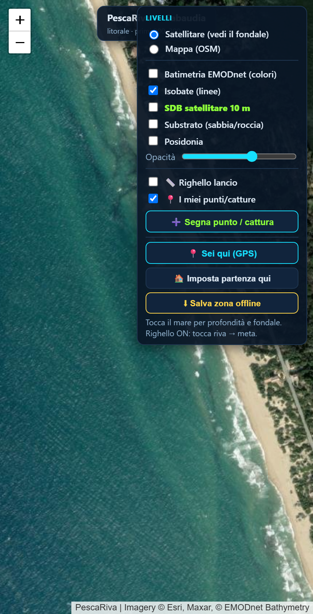
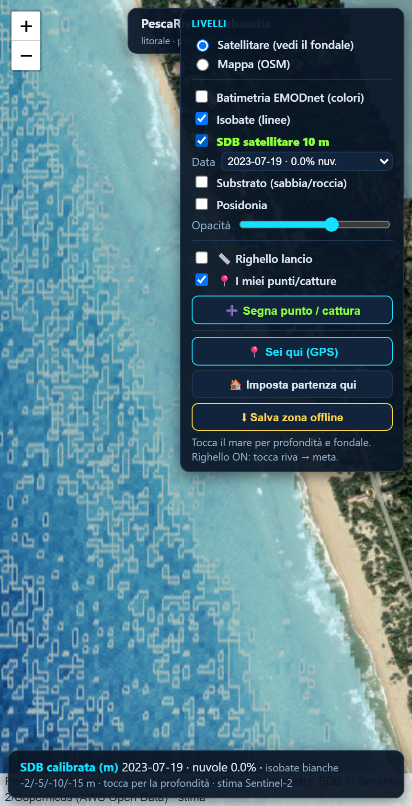
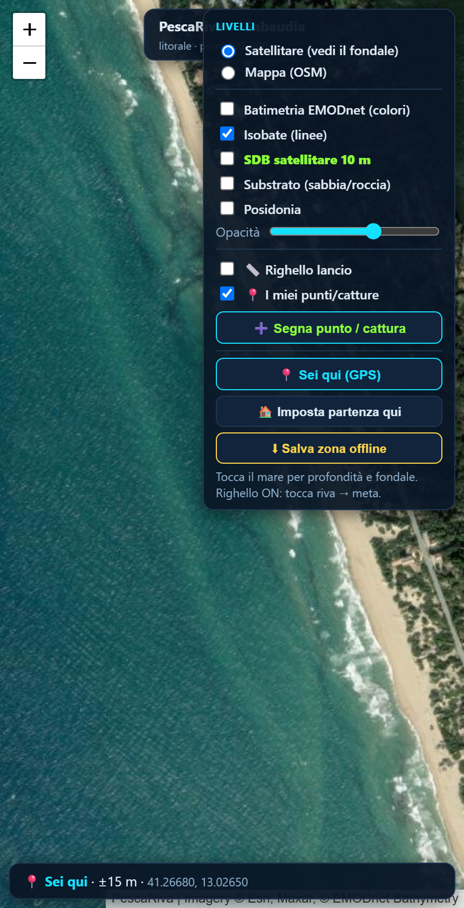
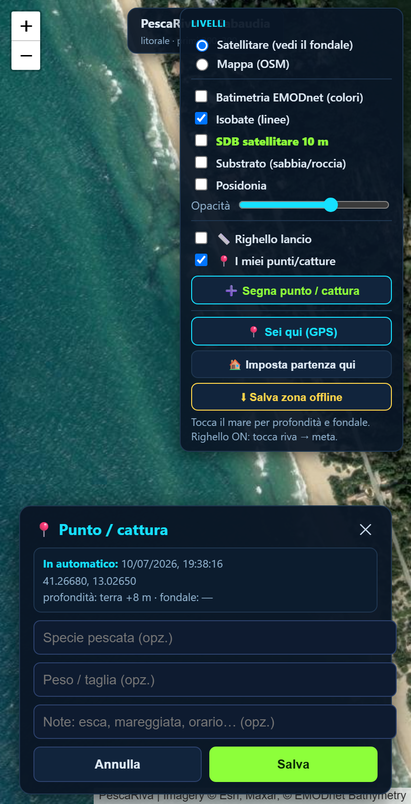

Apri il link nel browser del telefono (Chrome o Safari). Per averla come una vera app con l'icona:
Da quel momento la apri con un tocco, come tutte le app.
In alto a destra c'è il pannello LIVELLI: da lì accendi e spegni tutto. La mappa mostra la costa vista dal satellite: in acqua limpida si vede già il fondale (sabbia chiara, secche, macchie scure di roccia/alghe).

Il pannello dei livelli, in alto a destra
Nel pannello attiva «SDB satellitare 10 m» (la scritta verde). Dopo qualche secondo la mappa si colora: chiaro = basso, blu scuro = profondo. Le linee bianche sono le isobate (−2, −5, −10, −15 m), come le curve di livello del fondale.

Profondità del fondale (SDB) con le isobate bianche
Tocca un punto qualsiasi sul mare: compare in basso la profondità stimata e, dove disponibile, il tipo di fondale (sabbia, roccia, Posidonia). Serve a capire dove tenere l'esca.
Attiva «Righello lancio», poi tocca la riva e poi il punto dove cade l'esca: ti dice quanti metri hai lanciato. Un surfcasting tipico arriva a 80-150 m — così vedi se raggiungi la secca o la buca che ti interessa.
Premi «Sei qui (GPS)»: l'app trova la tua posizione reale (puntino azzurro) e ti segue mentre ti muovi sulla battigia. Così sai esattamente dove sei rispetto a secche e buche. Premi di nuovo per spegnerlo.

Il puntino azzurro = dove sei tu
Premi «Segna punto / cattura», poi tocca il punto sulla mappa. Si apre una scheda: scrivi la specie pescata (o scegline una dall'elenco), il peso e una nota. Data, ora, coordinate, profondità e tipo di fondo li mette da solo. Premi Salva.

La scheda cattura: tu scrivi solo la specie, il resto è automatico
I tuoi punti restano salvati sul telefono (li rivedi con «I miei punti/catture»). Toccando un pin vedi i dettagli e puoi cancellarlo.
Prima di andare in spiaggia, inquadra la zona dove pescherai e premi «Salva zona offline». L'app scarica le mappe di quell'area (e l'ultima profondità caricata). Così funziona anche senza rete telefonica sul posto.
Sposta la mappa sul tuo spot preferito e premi «Imposta partenza qui»: da lì in poi l'app si aprirà sempre lì, senza doverla cercare ogni volta.
Attiva «Substrato (sabbia/roccia)» e «Posidonia» per vedere le mappe ufficiali del tipo di fondo. La Posidonia (prateria verde) è spesso zona di pesce, ma può impigliare l'esca: sapere dov'è aiuta a scegliere il punto giusto.
In alto, il menu «Vai a una località…» ti porta subito su uno spot (A9, Sabaudia, Ostia, Circeo…). Per salvare un tuo posto: inquadralo e premi il «＋» accanto al menu, dagli un nome — resterà nell'elenco tra «Le mie località».
Le profondità del satellite sono una stima. Se conosci la profondità reale di qualche punto (dalla carta nautica o dallo scandaglio della barca), puoi migliorarle:
Da quel momento la SDB si ricalibra sui tuoi dati e i metri diventano più affidabili nella tua zona.